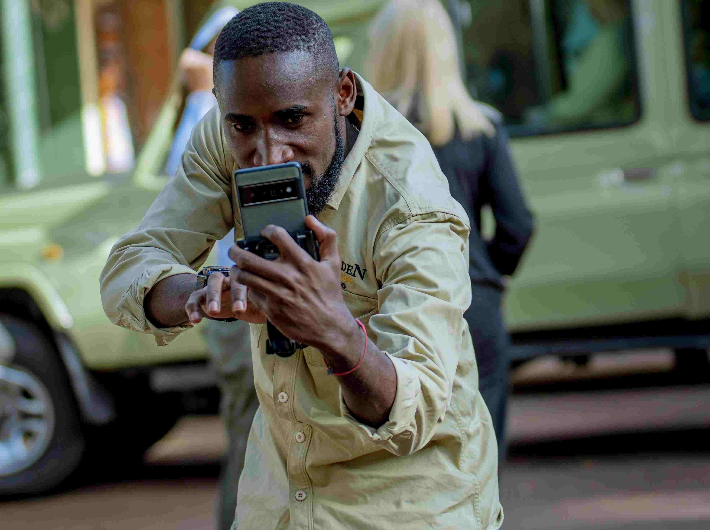
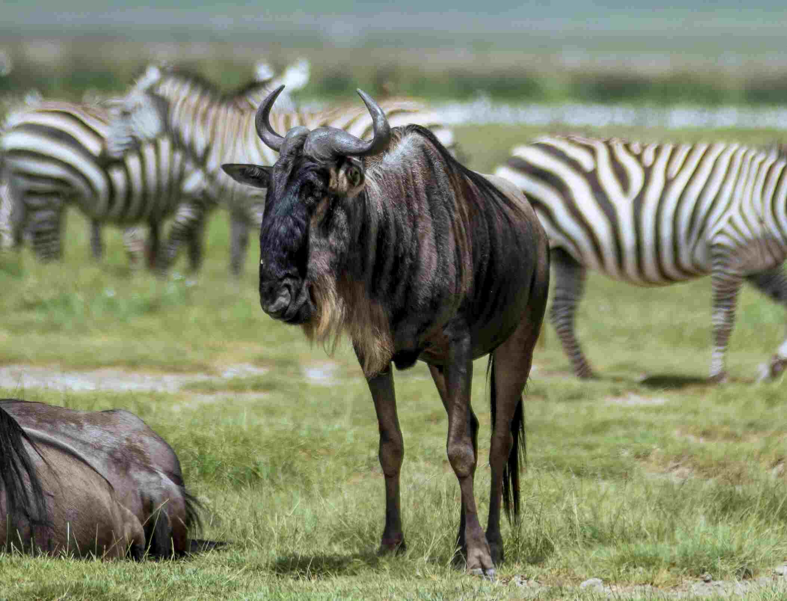

A Tanzanian safari offers some of the most incredible wildlife photography opportunities on the planet. From the vast herds of the Serengeti to the intimate encounters in Ngorongoro Crater, you'll want to capture those "golden memories." Whether you're a seasoned photographer or just starting with a new camera, these top 10 tips will help you make the most of your safari and bring home stunning images.
1. Gear Up: The Importance of Reach
While any camera is better than none, wildlife photography often requires getting closer optically. A **telephoto lens** is your most crucial piece of gear.
- Recommended Focal Length: Aim for a lens that reaches at least 300mm, preferably 400mm or more (on a full-frame camera, adjust for crop sensors). A zoom lens (like a 100-400mm or 200-500mm) offers versatility.
- Camera Body: A DSLR or mirrorless camera with good autofocus performance and decent low-light capabilities (ISO performance) is ideal.
- Support: Forget tripods in the vehicle. A **beanbag** is essential for stabilizing your lens on the vehicle's roof or window frame.
- Extras: Bring spare batteries, plenty of memory cards, and lens cleaning cloths.
2. Master Key Camera Settings
Understanding basic settings is key to moving beyond auto mode:
- Shutter Speed: Aim high (e.g., 1/1000s or faster) to freeze motion, especially for birds in flight or fast-moving animals. Adjust lower only if light is very low and your subject is still.
- Aperture: A wider aperture (lower f-number like f/4, f/5.6) helps isolate your subject with a blurred background (bokeh) and lets in more light. For landscapes or groups, use a narrower aperture (higher f-number like f/8, f/11).
- ISO: Keep it as low as possible for better image quality. Increase it only when necessary in low light (dawn/dusk) to maintain adequate shutter speed. Know your camera's acceptable ISO limits.
- Focusing Mode: Use continuous autofocus (AF-C or Servo) to track moving animals. Single-point AF often gives more control over where the focus falls (aim for the eyes!).
- Shooting Mode: Aperture Priority (Av/A) or Shutter Priority (Tv/S) offer good control. Manual mode gives full control but requires practice.
3. Compose Thoughtfully
A great subject needs good composition.
- Rule of Thirds: Imagine dividing your frame into nine equal parts with two horizontal and two vertical lines. Place your subject along these lines or at their intersections for a more balanced and engaging image.
- Eye Level: Whenever possible, try to photograph animals at their eye level. This creates a more intimate and powerful connection. Get low if you can (safely, with guide's permission).
- Leading Lines & Framing: Use natural elements like paths, rivers, or branches to lead the viewer's eye towards the subject or frame it naturally.
- Space to Move: If an animal is looking or moving in a particular direction, leave some empty space in front of it in the frame.
- Include the Environment: Don't just zoom in tightly all the time. Sometimes showing the animal within its stunning landscape tells a bigger story.
4. Patience is Paramount
Wildlife doesn't perform on command. Great shots often require waiting.
- Be prepared to spend time observing an animal, waiting for interesting behaviour, a yawn, a look, or interaction.
- Listen to your guide; they often anticipate potential action.
- Enjoy the moment, even if the "perfect" shot doesn't happen immediately.
5. Understand Animal Behaviour
Learning basic animal behaviour helps anticipate action.
- Observe interactions between animals.
- Know common signs (e.g., a predator stalking, birds alarm calling).
- Ask your guide about typical behaviours for the species you're watching.
- Anticipating action allows you to be ready with your camera settings.
6. Chase the Golden Light
The light during the **"golden hours"** – shortly after sunrise and before sunset – is magical for photography.
- The light is softer, warmer, and creates beautiful colours and long shadows.
- Midday sun is often harsh, creating strong contrasts and less flattering light.
- Be ready early in the morning and stay out until just before sunset (within park rules).
7. Get Low for Impact
Shooting from a lower angle, closer to the animal's eye level, dramatically improves impact.
- It creates a more intimate connection and avoids the "looking down" perspective common from vehicles.
- Use your beanbag on the car door's lower edge or the floor (if safe and permitted).
- Even a slight change in height can make a big difference.
8. Focus on the Eyes
The eyes are the window to the soul, even in wildlife. Ensure the eyes of your subject are sharp and in focus. This creates viewer engagement.
- Use single-point AF and place the focus point directly on the nearest eye.
- If the eyes aren't sharp, the photo often lacks impact, even if other parts are in focus.
9. Practice Ethical Photography
The animal's well-being always comes first.
- Maintain Distance: Never pressure your guide to get too close or disturb wildlife behaviour. Use your telephoto lens.
- No Baiting or Calling: Never use food, sounds, or other means to attract animals or elicit a reaction.
- Respect Park Rules: Adhere to all regulations, including staying on designated tracks and respecting off-road driving restrictions.
- Be Quiet: Keep voices low near wildlife.
- Turn Off Flash: Never use flash photography with wild animals, especially at night.
10. Protect Your Gear & Backup Your Photos
Safaris can be dusty and bumpy.
- Keep your camera gear protected in a padded bag when not in use.
- Avoid changing lenses in very dusty conditions if possible. Use a blower brush to clean sensors/lenses carefully.
- Bring lens cloths and cleaning solution.
- **Backup Regularly:** Transfer your photos to a laptop, external hard drive, or cloud storage each evening. Don't rely on just one memory card!
Capture Your Golden Memories!
A Tanzanian safari is a photographer's dream. By applying these tips, practising with your gear, and most importantly, enjoying the incredible experience, you'll significantly increase your chances of capturing breathtaking images that truly reflect the magic of the African wilderness. Happy shooting!
View Our Gallery Plan Your Photo Safari